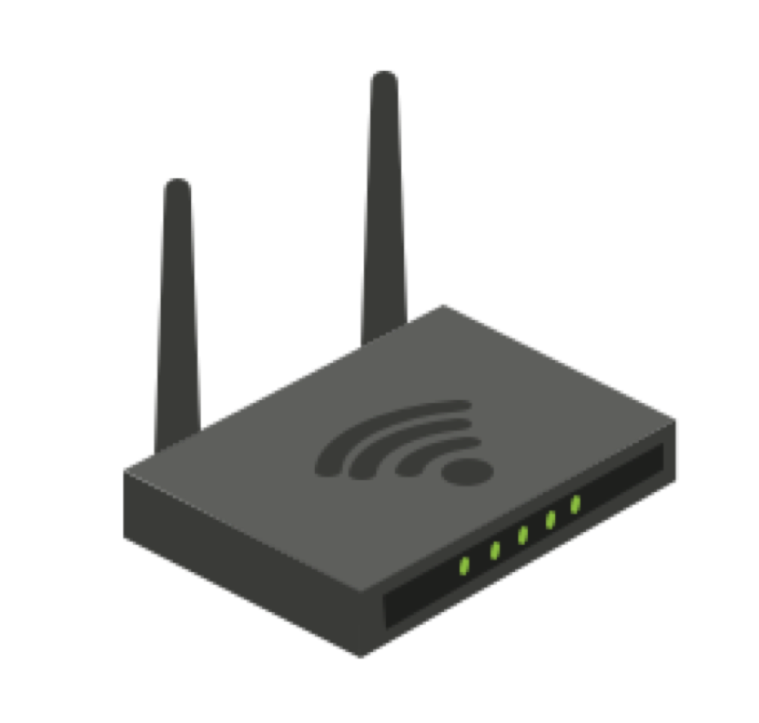
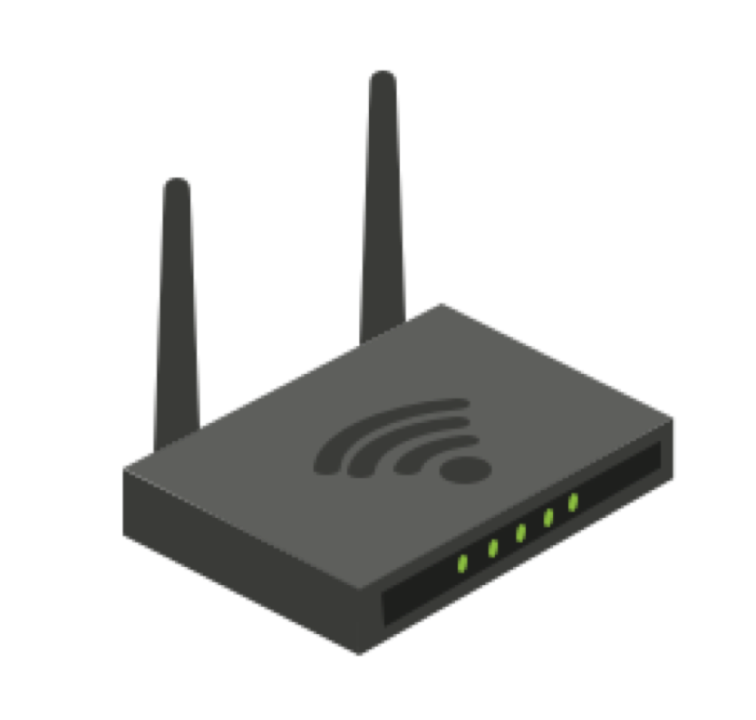
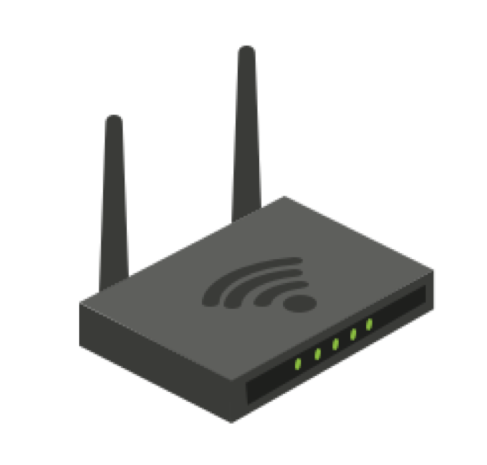

Wouter Slotboom, 34 anni, nel suo zaino, è presente un'antenna. Alcune persone parlano, altri stanno lavorando sui loro laptop o stanno giocando con i loro smartphone. Wouter rimuove il suo laptop dallo zaino, mette la piccola antenna sul tavolo e lo nasconde sotto un menu. Passa una cameriera e chiede un caffè e la password per la rete WiFi. Nel frattempo, Wouter accende il suo laptop e dispositivo, avvia alcuni programmi e presto lo schermo inizia a riempirsi di linee di testo verdi. Sul suo schermo iniziano a comparire frasi come "iPhone Joris" e "Simone's MacBook". L'antenna del dispositivo intercetta i segnali inviati dai laptop, smartphone e tablet che lo circondano. Inizia a comparire molto testo sullo schermo. È quindi in grado di vedere a quali reti WiFi i dispositivi erano precedentemente collegati. Wouter scopre che Joris (il dispositivo a cui si era precedentemente collegato) aveva già visitato McDonald's, probabilmente trascorreva le sue vacanze in Spagna (un sacco di nomi di reti in lingua spagnola), ed era stato un kart-racing (si era collegato a una rete appartenente a un noto centro di kart locale).



Woruter lascia a tutti di connettersi alla sua rete fasulla: Dopo che Slotboom si è connesso, è in grado di fornire a tutti i visitatori una connessione Internet e di reindirizzare tutto il traffico internet attraverso il suo piccolo dispositivo. La maggior parte degli smartphone, laptop e tablet si connettono automaticamente alle reti WiFi. Di solito preferiscono una rete con una connessione stabilita in precedenza. Il dispositivo di Slotboom è in grado di registrare queste ricerche e di apparire come quella rete WiFi affidabile. Slotboom intanto vede sempre più visitatori accedere alla sua rete fittizia. Già 20 smartphone e laptop sono suoi. Se lo volesse, Slotboom potrebbe rovinare completamente la vita delle persone connesse: può recuperare le loro password, rubare la loro identità e saccheggiare i loro conti bancari. Questo procedimento potrebbe anche essere fatto a chiunque abbia uno smartphone alla ricerca di una rete o un laptop che si connette a una rete WiFi. La buona notizia è che alcune reti sono meglio protette di altre; alcuni servizi di posta elettronica e social media utilizzano metodi di crittografia più sicuri rispetto ai loro concorrenti. Ma se trascorri una giornata passeggiando in città con Wouter Slotboom, scoprirai che quasi tutto e tutti connessi a una rete WiFi possono essere violati. Slotboom si definisce un "hacker etico" o uno dei bravi ragazzi; un appassionato di tecnologia che vuole svelare i potenziali pericoli di Internet e della tecnologia. Lo fa, come ha fatto oggi, di solito dimostrando quanto sia facile infliggere danni. Perché in realtà, è un gioco da ragazzi: il dispositivo è economico e il software per intercettare il traffico è molto facile da usare ed è prontamente disponibile per il download, tutto ciò che serve è di 70 euro, un quoziente intellettivo medio e un po’ di pazienza. Questo insegna che è meglio non connettersi mai più a una rete Wi-Fi pubblica insicura senza prendere misure di sicurezza. Probabilmente adesso ci penserai due volte prima di connetterti al WiFi del MacDonald's.